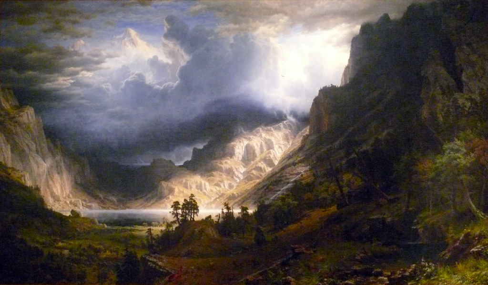

Romanticism rejects the ideals of its time from enlightenment, industrialisation and scientific revolution. It idolises and values awe of nature, sublime, imagination and individualism to name a few. The poem, "Lines Written in Early Spring" uses language techniques to express and reflect romantic ideals, especially through nature and individualism. At the beginning of the poem, the idea of "thoughts" is repeated, emphasising how important imagination is, as everything the poem brings to the table stems through the idea of his imagination, as a base for the poem. Imagination is a powerful tool that can cause good and bad, as shown throughout the poem in these techniques. Throughout the poem, nature is constantly being personified, through capitalisation of "Nature" and giving fauna humanlike abilities such as breathing. This creates the feeling of the forest and nature in general being alive, intelligent and conscious. This reflects romanticism through the idea of the power of nature, as displayed in the poem as a living thing all around you, like a hivemind. Nature is a powerful being and disobeying it to harshly has consequences as we can see today with climate change. In the first stanza, Wordsworth mentions "... pleasant thoughts bring sad thoughts ...". This creates an oxymoron, as his words oppose each other with pleasure and sadness. This shows the power that the imagination of an individual can have, causing paradoxical ideas, twisting thoughts. It also shows there is a good and bad in our imagination through this contrast. Imagination comes with power, as Lines Written in Early Spring reflect. William Wordsworth uses various language techniques to create a poem that respects and expresses the ideas that romanticism contains, like imagination, and awe of nature. He does more than express and shows the positive and negatives of these ideals, like a double edged sword.